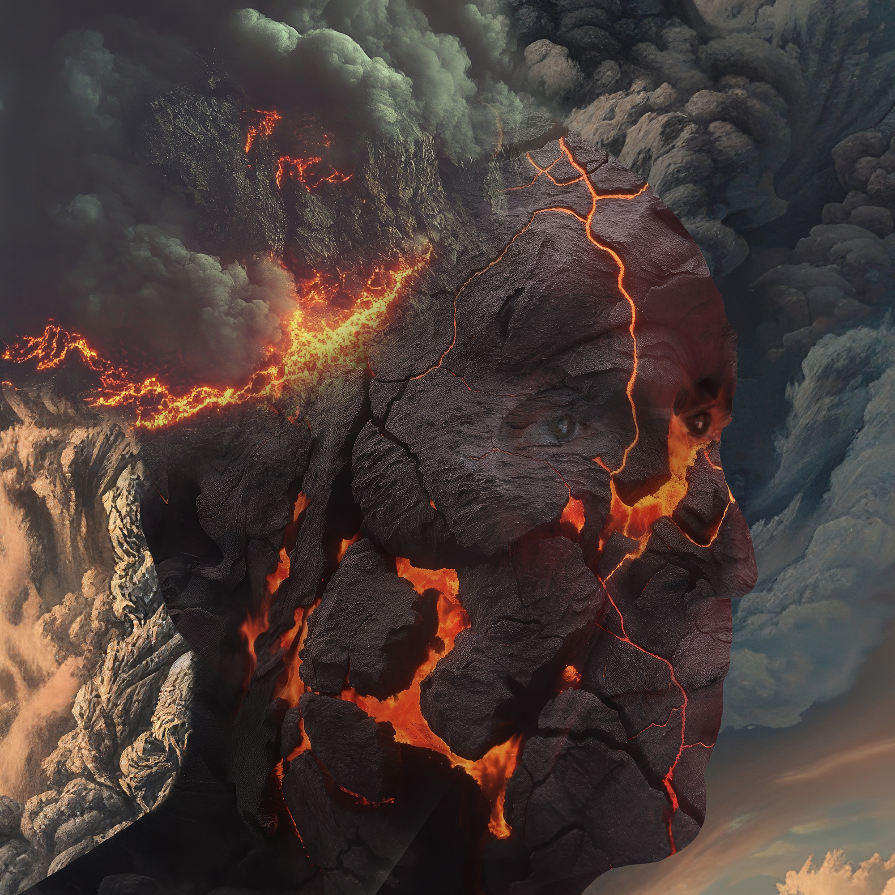
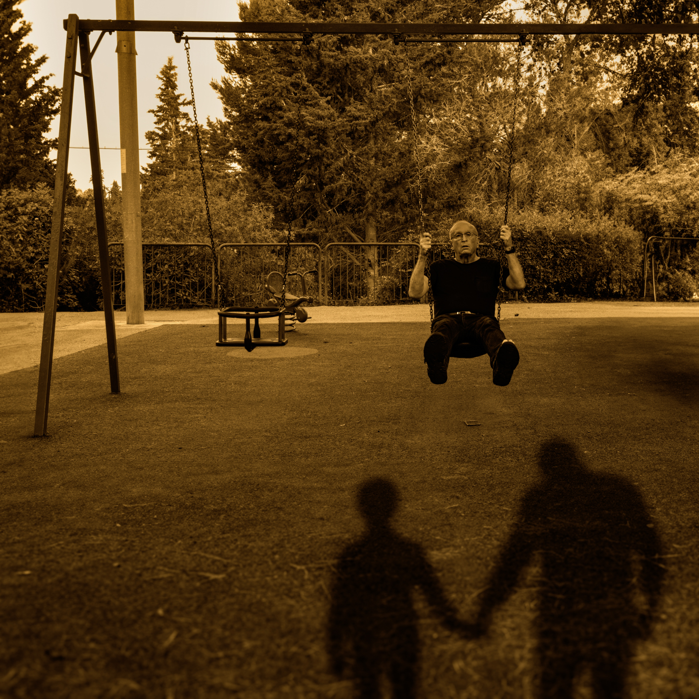
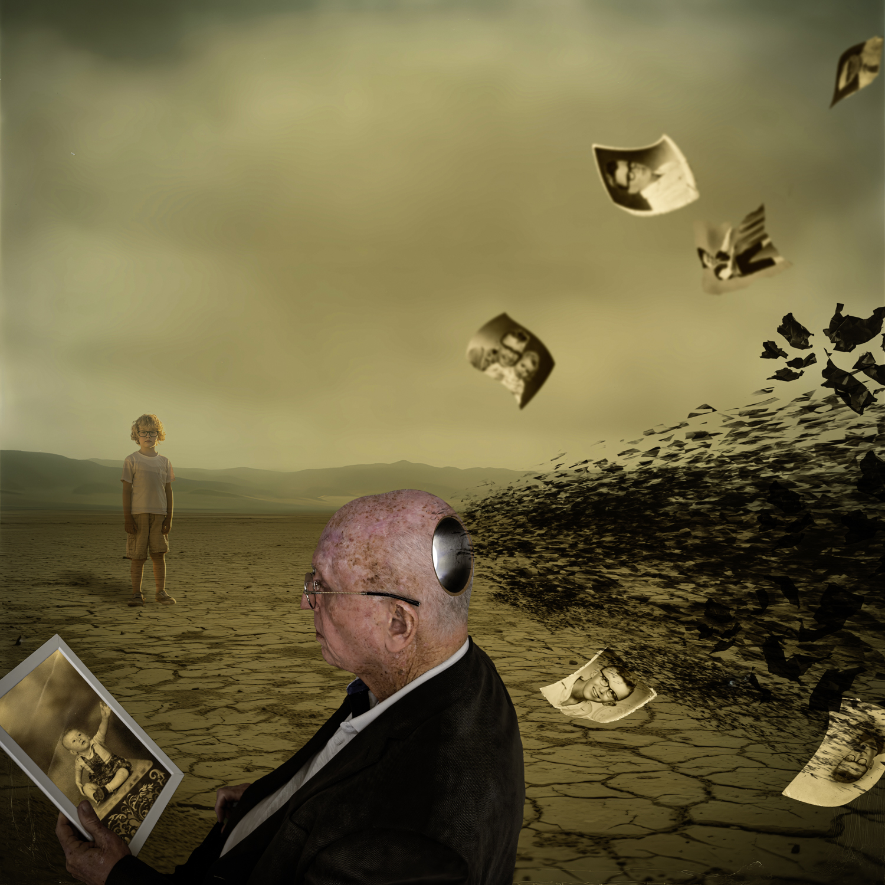
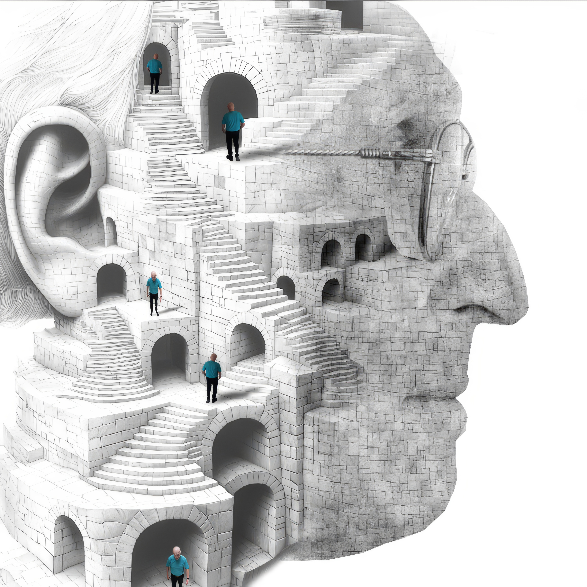

Dov FuchsDigital Art Gallery
A guided entrance for small screens: current exhibition, image of the month, series library, and artist information.
BeginPortraits of the Inner World
A temporary focus wall of psychologically charged digital portraits, staged rooms, self-encounters, memory fragments, and inner architecture.









The House of What Remains

Dov's Other Series
Five related bodies of work gathered outside the current exhibition.


Artist Information
CV, artist statement, about, contact information, price list, and visitor book.